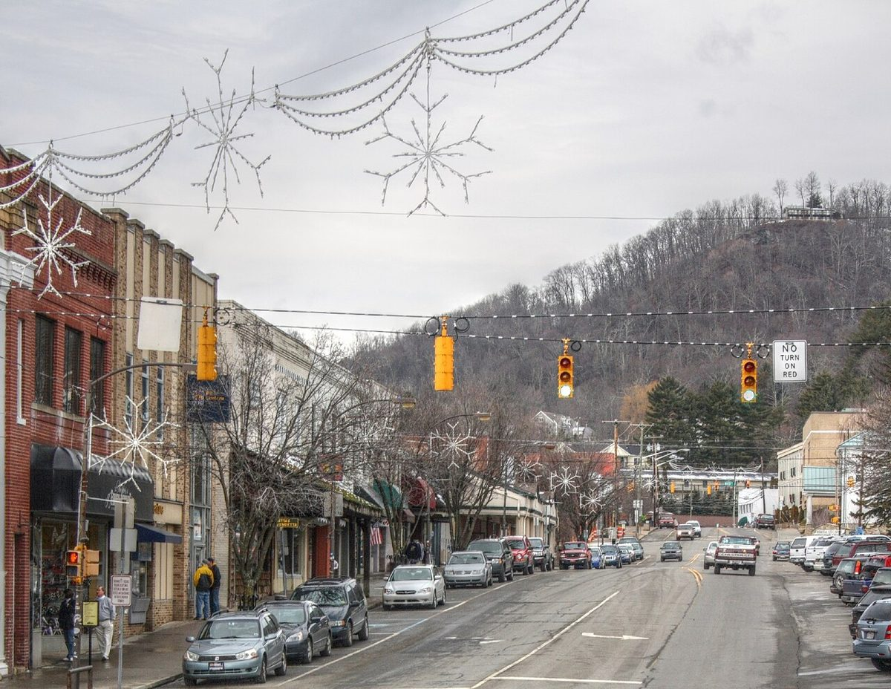

Tuesday · Free gallery option
Stitching the Natural World: Nancy Hershberger runs June 5–November 21, 2026 at the Turchin Center. Tuesday hours are 10am–6pm and admission is free. The center is at 423 West King Street; parking may be metered.
NORTH CAROLINA · THE PRACTICAL MOUNTAIN BASE
Boone adds an economical room comparison, a free exhibition, and a genuinely dated evening recital to the High Country stop.
THE FEEL OF THE PLACE
Boone brings a college-town rhythm to the mountain portion of the trip. Appalachian State adds galleries, a dated recital and an everyday food scene to the outdoor setting. It makes a practical sleeping base after Blowing Rock: spend daylight on the landscape, eat simply, then enjoy an evening that does not depend on clear skies or a paid attraction.

Representative photograph from the linked archive; seasons and current conditions will differ.
A SUGGESTED RHYTHM
Stitching the Natural World: Nancy Hershberger runs June 5–November 21, 2026 at the Turchin Center. Tuesday hours are 10am–6pm and admission is free. The center is at 423 West King Street; parking may be metered.
An Evening of Music for Clarinet and Violin/Viola is listed November 10 in Schaffel Recital Hall, Broyhill Music Center, 813 Rivers Street. No ticket is required. Leave time for parking.
Allow roughly 3–4½ hours driving using faster roads toward Fancy Gap and selected Parkway sections toward Mabry Mill, plus stops. This allowance is not a promise for an uninterrupted slow Parkway journey. Check conditions before leaving.
EAT WELL, KEEP IT SIMPLE
Casual choices for this stop, with restaurant information and independent reviews or local guides to help you choose. Published prices exclude extras unless noted; recheck hours before setting off.
Burgers, hand-cut fries and shakes at the 1521 Blowing Rock Road branch. A straightforward quick meal, especially useful around a concert schedule.
Budget: Budget fast-casual choice; exact current meal price not verified.
When to go: Official Boone hours: daily 10:30am–9pm, including Tuesday.
Southwestern and Caribbean-style bowls with vegetarian choices. A change from burgers; current traveler reviews are mixed about the service format, so treat this as a menu-led option.
Budget: Restaurant ordering menu lists build-your-own boat/bowl $12; Barbados and Taos $16, before tax, extras and drinks.
When to go: Official Tuesday hours: 11:30am–8pm.
CHECK BEFORE YOU GO
Road and trail conditions can change with weather and repairs. Driving and visit durations are planning allowances, not live navigation. Recheck opening hours and dated events shortly before travel.